Real-world design tasks—such as picture book creation, film storyboard development using character sets, photo retouching, visual effects, and font transfer—are highly diverse and complex, requiring deep interpretation and extraction of various elements from instructions, descriptions, and reference images. The resulting images often implicitly capture key features from references or user inputs, making it challenging to develop models that can effectively address such varied tasks. While existing visual generative models can produce high-quality images based on prompts, they face significant limitations in professional design scenarios that involve varied forms and multiple inputs and outputs, even when enhanced with adapters like ControlNets and LoRAs. To address this, we introduce IDEA-Bench, a comprehensive benchmark encompassing 100 real-world design tasks, including rendering, visual effects, storyboarding, picture books, fonts, style-based, and identity-preserving generation, with 275 test cases to thoroughly evaluate a model’s general-purpose generation capabilities. Notably, even the best-performing model only achieves 22.48 on IDEA-Bench, while the best general-purpose model only achieves 6.81. We provide a detailed analysis of these results, highlighting the inherent challenges and providing actionable directions for improvement. Additionally, we provide a subset of 18 representative tasks equipped with multimodal large language model (MLLM)-based auto-evaluation techniques to facilitate rapid model development and comparison. We releases the benchmark data, evaluation toolkits, and an online leaderboard at https://github.com/ali-vilab/IDEA-Bench, aiming to drive the advancement of generative models toward more versatile and applicable intelligent design systems.
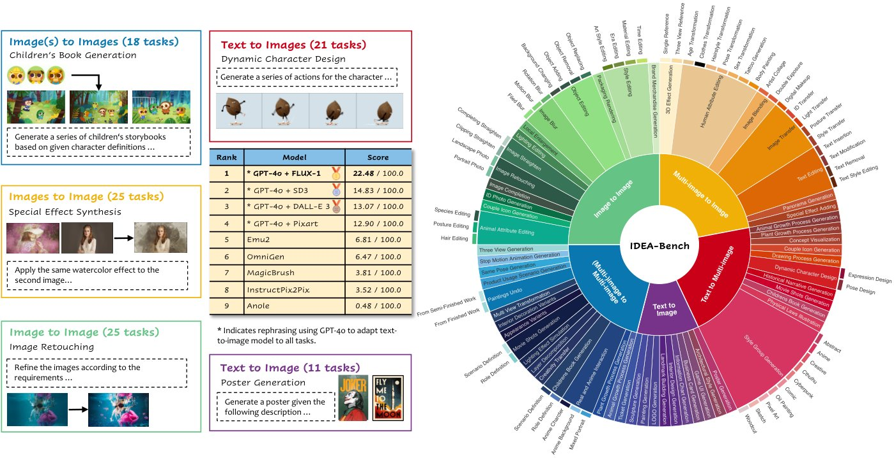
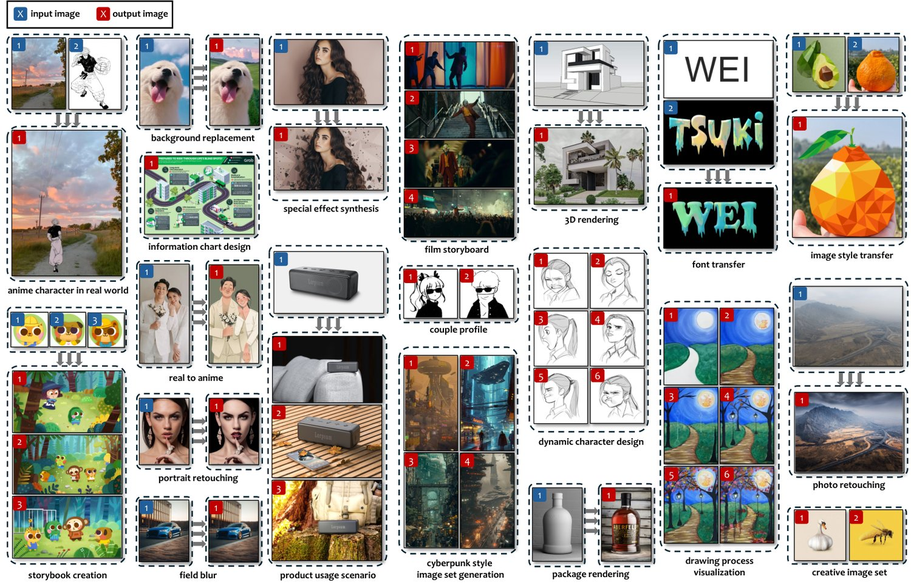
Recent advancements in Text-to-Image (T2I) models (Ramesh et al., 2021; Ramesh et al., 2022; Esser et al., 2021; Rombach et al., 2022; Saharia et al., 2022; Betker et al., 2023; Podell et al., 2023; Esser et al., 2024a; Baldridge et al., 2024; Chen et al., 2023; Labs, 2024a) have significantly enhanced the ability to generate high-quality images from textual descriptions. Building on these successes, models such as ControlNet (Zhang et al., 2023a) and T2I-Adapter (Mou et al., 2024) integrate additional networks into text-to-image diffusion frameworks to incorporate visual conditioning. Similarly, InstructPix2Pix (Brooks et al., 2023) and Emu-Edit (Sheynin et al., 2024) are specifically trained on datasets tailored for complex image editing tasks. Despite the widespread popularity of models like DALL-E 3 (Ramesh et al., 2022) and FLUX-1 (Labs, 2024a), which attract millions of visits daily, professional users often rely on established workflows and specialized software for image creation. This reliance highlights a substantial gap between the capabilities of current image generation models and the demanding requirements of professional-grade image design. When most existing image generation models focus on academic task research, the rapid evolution of large language models (LLMs) (Radford et al., 2019; Raffel et al., 2020; Brown, 2020; Ouyang et al., 2022; Zhang et al., 2022; Touvron et al., 2023a; Touvron et al., 2023b; Dubey et al., 2024) and multimodal language models (MLLMs) (Li et al., 2024; Wang et al., 2024a; OpenAI, 2024; Team et al., 2023) indicate that future image generation models will increasingly aim to achieve both professional-grade quality and task unification, enabling them to handle a diverse range of complex applications seamlessly.
Recent advances in image generation have demonstrated robust task unification and generalization through large-scale pre-training and arbitrary task learning (Ge et al., 2023; Sun et al., 2023; Sun et al., 2024; Wang et al., 2024b; Chern et al., 2024; Huang et al., 2024). These models handle a wide range of academic tasks with a unified input-output format and can generalize to unseen tasks, showcasing in-context learning abilities. However, existing benchmarks (Cho et al., 2023; Ghosh et al., 2024; Sheynin et al., 2024; Hu et al., 2023; Ruiz et al., 2023; Ku et al., 2023) are often narrow in scope, focusing primarily on isolated academic tasks and lacking comprehensive criteria to evaluate the multifaceted demands of professional image design. Consequently, there is a critical need for more robust and versatile evaluation frameworks to effectively assess the diverse and sophisticated capabilities of contemporary generative models.
To bridge the gap between generative models and professional-grade design, we introduce IDEA-Bench (Intelligent Design Evaluation and Assessment Benchmark). We conduct a thorough review of real-world design and art tasks from diverse platforms, distilling 100 representative professional image generation tasks and 275 cases that comprehensively span the essential capabilities and effects for creating all forms of artwork. These tasks are systematically categorized into five distinct types based on required capabilities: text-to-image, image-to-image, images-to-image, text-to-images, and image(s)-to-images, as illustrated in fig. 1. Figure 2 provides an intuitive display of the definition of some tasks. Currently, only a few models (Yang et al., 2024a; Wu et al., 2024a; Wang et al., 2024b; Chern et al., 2024) can handle the most intricate category, which demands MLLM-level understanding of both image and text and the ability to produce variable-length image sequences. To evaluate generated images, we leverage MLLM to transform the evaluation into an image understanding task. This approach surpasses traditional metrics like FID (Chong and Forsyth, 2020) and CLIPScore (Hessel et al., 2021), which fail to capture nuances in aesthetic quality, contextual relevance, and multimodal integration. IDEA-Bench includes six detailed evaluation questions per case, totaling 1,650 binary scoring items, and a representative subset of 18 tasks for more nuanced and reliable assessments, ensuring precise and objective evaluations aligned with professional design standards.
Our contributions can be summarized as follows:
We introduce IDEA-Bench to bridge the gap between current generative model capabilities and the stringent demands of professional-grade image design, which consists of 100 carefully selected tasks.
We develop a task categorization of five distinct categories based on complexity and modality requirements, with a detailed evaluation framework comprising 1,650 binary scoring items, enabling precise and objective assessment.
We leverage MLLM-evaluation on a subset of 18 representative tasks. IDEA-Bench demonstrates that MLLMs have the capability to perform objective image assessment.
Recently, diffusion models such as Stable Diffusion (Podell et al., 2023; Esser et al., 2024b), DALL-E 3 (Ramesh et al., 2022), and FLUX-1 (Labs, 2024b) have gained significant popularity for generating photorealistic images and offering improved training stability. However, state-of-the-art models still struggle with intricate prompts involving multiple visual concepts and extensive textual information, similar to image editing models (Brooks et al., 2023; Zhang et al., 2024a; Sheynin et al., 2024), which find it challenging to interpret detailed commands requiring nuanced modifications for professional-grade tasks. To enhance generative models’ capabilities, IDEA-Bench assesses existing image editing models against the rigorous demands of professional image design, aiming to emulate the creative and analytical processes of human designers. Additionally, image customization (Gal et al., 2022; Hu et al., 2021; Ruiz et al., 2022) is crucial for professionals needing varied personalized images. While techniques like Textual Inversion (Gal et al., 2022), LoRA (Hu et al., 2021), and DreamBooth (Ruiz et al., 2022) improve text-to-image models through fine-tuning, they lack adaptability to unseen subjects. IDEA-Bench aims at comprehensively evaluating models’ customization capabilities across multi-image generation tasks, assessing consistency in content, style, identity, and conceptual aspects.
Universal generative models have become pivotal in advancing AI’s ability to perform a diverse array of tasks across both language and vision domains. LLMs (Radford et al., 2019; Raffel et al., 2020; Brown, 2020; Ouyang et al., 2022; Zhang et al., 2022; Touvron et al., 2023a; Touvron et al., 2023b; Dubey et al., 2024) have demonstrated remarkable versatility, excelling in tasks such as question answering and summarization through extensive pretraining on varied datasets. Building on this success, recent academic efforts (Team, 2024; Zhou et al., 2024; Sun et al., 2024; Wang et al., 2024b; Xiao et al., 2024) aim to adopt a more cohesive paradigm that addresses a wide range of visual generation tasks, including text-to-image and autoregressive image synthesis. Despite these advancements, there remains a significant gap in establishing a unified benchmark that comprehensively evaluates the multifaceted capabilities of these generative models. IDEA-Bench establishes a unified evaluation standard to assesses the strengths and limitations of existing generative foundation models, while guiding the development towards handling realistic and complex real-world image generation tasks at the same time.
| Benchmark | Tasks | Evaluation Category | Avg. Length | MLLM Eval. | ||||
|---|---|---|---|---|---|---|---|---|
| T2I | T2Is | I2I | Is2I | I(s)2Is | ||||
| PaintSkills (Cho et al., 2023) | 3 | ✓ | ✗ | ✗ | ✗ | ✗ | 10.44 | ✗ |
| GenEval (Ghosh et al., 2024) | 6 | ✓ | ✗ | ✗ | ✗ | ✗ | 7.61 | ✗ |
| EmuEdit (Sheynin et al., 2024) | 12 | ✗ | ✗ | ✓ | ✗ | ✗ | 8.57 | ✗ |
| TIFA (Hu et al., 2023) | 12 | ✓ | ✗ | ✗ | ✗ | ✗ | 10.46 | GPT (Brown, 2020) |
| DreamBooth (Ruiz et al., 2023) | 30 | ✗ | ✗ | ✓ | ✗ | ✗ | 7.58 | ✗ |
| ImagenHub (Ku et al., 2023) | 7 | ✓ | ✗ | ✓ | ✗ | ✗ | 8.61 | ✗ |
| IDEA-Bench | 100 | ✓ | ✓ | ✓ | ✓ | ✓ | 138.68 | Gemini (Team et al., 2023) |
The development of benchmarks typically keeps pace with advancements in text-to-image (T2I) synthesis (Ramesh et al., 2021; Ramesh et al., 2022; Esser et al., 2021; Rombach et al., 2022; Saharia et al., 2022; Betker et al., 2023; Podell et al., 2023; Esser et al., 2024a; Baldridge et al., 2024; Chen et al., 2023; Labs, 2024a). DrawBench was initially introduced by Imagen (Saharia et al., 2022), followed by DALL-EVAL (Cho et al., 2023), which proposed PaintSkills to evaluate visual reasoning and social bias capabilities. Recently, an increasing number of benchmarks have emerged (Petsiuk et al., 2022; Bakr et al., 2023; Huang et al., 2023; Lee et al., 2024; Ku et al., 2023). While these benchmarks primarily focus on assessing image quality and alignment, DEsignBench (Lin et al., 2023) shares similarities with our approach by emphasizing scenarios within authentic design contexts. Differently, IDEA-Bench extends beyond this by addressing additional open challenges in professional creativity. Furthermore, IDEA-Bench is more closely aligned with the latest model capabilities, enabling the use of multi-image and complex instructions as diverse forms of guidance. As shown in table 1, IDEA-Bench greatly expand the prompt length and adde two evaluation dimensions: multi-image input and multi-image generation. This allows for the generation of both single and multiple images, thereby better mimicking the workflows of professional designers.
We present IDEA-Bench, a comprehensive image generation benchmark that encompasses a wide range of professional tasks in image generation and rigorously challenges models across multiple dimensions of capability. In this section, we first introduce IDEA-Bench’s data collection over four different model level in section 3.1, as well as the manual annotation pipeline in section 3.2, followed by a detailed explanation of both human evaluation and automated assessment methodologies, along with the specific metrics used, in section 3.3.
To ensure that the tasks evaluated in IDEA-Bench closely mirror real-world and professional scenarios, we source all task directives and data from the internet and professional designers. Leveraging the knowledge and capabilities of GPT-4o (OpenAI, 2024), we clearly define and classify the tasks, creating task variants aligned with existing model capabilities. The tasks in IDEA-Bench are categorized as follows:
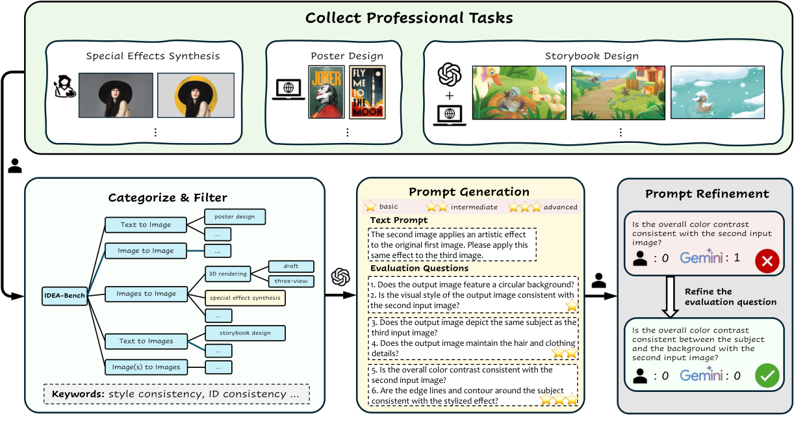
While typical T2I users provide brief descriptions and rely on the model’s discretion, professional users meticulously control every visual detail, often iterating multiple prompts to achieve the desired outcome. Current T2I models (Ramesh et al., 2021; Ramesh et al., 2022; Esser et al., 2021; Rombach et al., 2022; Saharia et al., 2022; Betker et al., 2023; Podell et al., 2023; Esser et al., 2024a; Baldridge et al., 2024; Chen et al., 2023; Labs, 2024a) struggle with complex prompts that include numerous visual concepts and lengthy text. To address this, IDEA-Bench includes 11 tasks designed to evaluate models’ ability to handle extensive visual components and incorporate text within images, essential for tasks like poster generation and business card generation.
Unlike ImagenHub (Ku et al., 2023), which categorizes conditional image generation tasks under specific definitions, we unify these into image-to-image and images-to-image. This consolidation promotes the development of models with enhanced task unification and generalization, similar to advancements in LLMs. IDEA-Bench includes numerous design tasks guided by both image and text inputs in real-world contexts, such as brand merchandise generation, package rendering, and image retouching. With the advent of models like GDT (Huang et al., 2024), Emu2 (Sun et al., 2024), and OmniGen (Xiao et al., 2024), we anticipate future models will exhibit strong multimodal understanding and generative capabilities.
Distinct from previous benchmarks (Cho et al., 2023; Ghosh et al., 2024; Sheynin et al., 2024; Hu et al., 2023; Ruiz et al., 2023; Ku et al., 2023), IDEA-Bench introduces tasks that require generating multiple related images simultaneously. These tasks cater to professional demands such as creating series images around a subject, multi-view image generation, and illustrating storybooks. Unlike video generation (Zhao et al., 2024; Yang et al., 2024b), these image tasks involve significant visual differences while maintaining specific correlations. We further subdivide multi-image generation into text-to-images and image(s)-to-images categories to address models’ limitations in handling diverse input modalities, thereby testing their ability to maintain detail, style, and content consistency.
After collecting all tasks and corresponding images, annotators provide clear task definitions for each specific case, which, along with input images, are fed to GPT-4o (OpenAI, 2024) to generate image prompts tailored to each case. To ensure consistent evaluation across tasks, we also use GPT-4o to create a standardized set of six evaluation questions per task, ranging from basic to advanced difficulty levels. Specifically, recognizing the inherent subjectivity in both MLLM-based and human evaluations, we adopt a binary scoring system (0 or 1) for each question. This approach draws from methodologies in recent multimodal benchmarks (Bai et al., 2023; Liu et al., 2025; Li et al., 2023; Zhang et al., 2024b), where multiple-choice formats are used to mitigate interpretive bias.
To further enhance objectivity and reduce variability, we modify the typical multi-level scoring scale found in existing datasets and models, converting it into a set of six binary (true/false) questions. Each question is accompanied by clearly defined scoring criteria, with 0 indicating unmet standards and 1 representing success. For deeper granularity, questions 1-2 assess the model’s understanding of basic task requirements, questions 3-4 evaluate the quality of task completion, and questions 5-6 examine the model’s attention to detail and aesthetic quality in the generated images. This structured assessment methodology ensures a rigorous and objective evaluation framework, aligning with professional standards and reducing potential sources of instability in scoring.
However, despite our efforts to define evaluation questions as objectively as possible, multimodal large language models (MLLMs) (Li et al., 2024; Wang et al., 2024a; OpenAI, 2024; Team et al., 2023) still struggle to match human evaluators on complex, real-world tasks, limited by current models’ gaps in image comprehension relative to human capabilities. To address this, we select a subset of tasks and refine the evaluation questions based on specific examples, ensuring that MLLMs can yield intuitively reasonable results.
One challenge in using MLLMs as evaluators is the sensitivity of models like GPT-4V/GPT-4o to the order of image presentation (Wang et al., 2022; Wu et al., 2024b; Zhang et al., 2023b; Zheng et al., 2023), which particularly makes these models less reliable for consistent comparative evaluation. MLLMs also fail to identify the sequence of multiple input images, whether it is input separately for multiple images or input as a collage. To mitigate this, we manually fine-tune evaluation questions for each case within the task subset, ensuring alignment with human intuition.
For example, in the task of generating a children’s storybook with defined character images, we refine each evaluation angle by randomly sampling pairs of input and output images to test consistency. A typical question might ask if the primary character in the first input image appears with consistent features in the third output image. For testing, we use the Gemini 1.5 Pro (Team et al., 2023) to score model outputs and compared these results against human ratings. In cases where discrepancies arise, annotators iteratively refine the language of the evaluation questions until the MLLM evaluations align with human judgment. This approach enhances the robustness of our benchmark, ensuring that evaluations reflect both task-specific accuracy and consistency across diverse visual requirements.
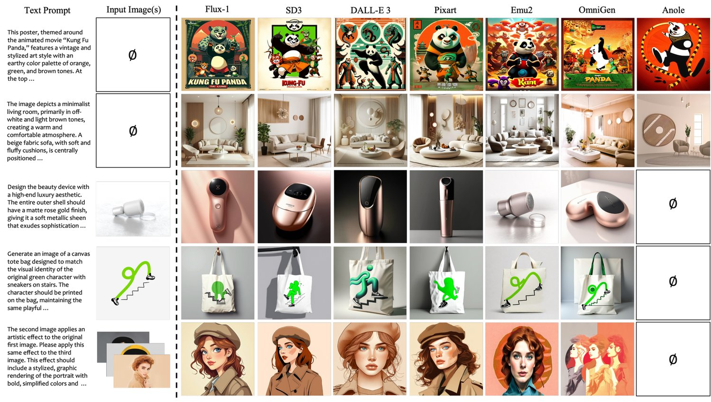
Each subtask in IDEA-Bench comprises 2 to 5 specific cases, with all cases within a subtask being evaluated using the same set of six binary (0 or 1) judgment questions. These evaluation questions are organized into three hierarchical levels, reflecting the priority of task completion over mere aesthetic quality. For each case, scoring progresses sequentially through these levels. If a model does not achieve a perfect score at a lower level, the scores for all higher levels are automatically set to 0. This hierarchical approach ensures that while a model may generate high-quality and visually appealing images, it must also fully meet the task requirements to receive a high overall score. This methodology aligns the evaluation criteria with human design standards, emphasizing the importance of fulfilling task objectives.
Formally, let the dataset be denoted as . Each subtask consists of 2 to 5 specific cases, all evaluated using the same set of six binary (0 or 1) judgment questions. The score for each subtask is calculated by averaging the binary scores of its cases. Subsequently, each major category receives its score by averaging the scores of its subtasks and converting the result to a percentage. The overall score for the entire dataset is then determined by averaging the scores of all major categories.
Importantly, if a model fails to complete a specific task, it is assigned a score of 0 for that task, ensuring that incomplete performances are accurately reflected in the overall evaluation. This hierarchical scoring framework ensures a precise and objective assessment of model performance, closely aligning with the rigorous standards expected by professional designers.
Automated evaluation is performed on a subset of IDEA-Bench comprising 18 tasks, named IDEA-Bench-mini. During the prompt refinement phase, annotators craft unique evaluation questions for each case, in contrast to the human evaluation setup where all cases within a subtask share the same 6 evaluation questions. This tailored approach allows for more precise and context-specific assessments. Scoring is conducted using Gemini 1.5 Pro (Team et al., 2023), adhering to the same hierarchical scoring methodology outlined in section 3.3.1. To enhance result stability and reliability, each case is evaluated three times independently, and the final score is computed as the average of these three evaluations. This repetition mitigates potential variability in automated assessments and ensures consistent and robust scoring outcomes.
By integrating both human and automated evaluation methods, IDEA-Bench provides a comprehensive framework for assessing the multifaceted capabilities of generative models. This dual approach not only leverages the nuanced judgment of human evaluators but also benefits from the scalability and consistency of automated tools, thereby offering a balanced and thorough evaluation of model performance.
| Method | Param. | Scores on All Categories | Avg. Score | ||||
|---|---|---|---|---|---|---|---|
| T2I | I2I | Is2I | T2Is | I(s)2Is | |||
| FLUX-1 (Labs, 2024b) | 12B | 46.06 | 12.13 | 4.89 | 20.15 | 29.17 | 22.48 |
| DALL-E 3 (Ramesh et al., 2022) | 12B | 24.34 | 6.95 | 5.27 | 14.36 | 14.44 | 13.07 |
| SD3 (Esser et al., 2024b) | 2B | 24.04 | 10.79 | 4.69 | 21.59 | 13.06 | 14.83 |
| Pixart (Chen et al., 2023) | 0.6B | 14.44 | 7.75 | 3.48 | 17.46 | 21.39 | 12.90 |
| InstructPix2Pix (Brooks et al., 2023) | 1B | – | 17.58 | – | – | – | 3.52 |
| MagicBrush (Zhang et al., 2024a) | 1B | – | 19.07 | – | – | – | 3.81 |
| Anole (Chern et al., 2024) | 7B | 0.00 | 0.64 | 0.00 | 1.74 | 0.00 | 0.48 |
| Emu2 (Sun et al., 2024) | 37B | 17.98 | 7.05 | 8.98 | – | – | 6.81 |
| OmniGen (Xiao et al., 2024) | 3.8B | 21.41 | 8.17 | 2.77 | – | – | 6.47 |
| Emu2 (Sun et al., 2024) | 37B | 17.98 | 7.05 | 8.98 | 15.53 | 12.78 | 12.46 |
| OmniGen (Xiao et al., 2024) | 3.8B | 21.41 | 8.17 | 2.77 | 23.52 | 21.39 | 15.45 |
Currently, only a few models (Yang et al., 2024a; Wu et al., 2024a; Wang et al., 2024b; Chern et al., 2024) are capable of generating multiple related images simultaneously, makes it difficult to analyse a model’s ability to generate multiple images potentially. However, as DALL-E 3 (Ramesh et al., 2022) could perform multi-image generation owing to its MLLM GPT-4o (OpenAI, 2024), which could summarize multimodal input and then generate the corresponding prompt for each image. To empower other leading T2I models (Labs, 2024b; Esser et al., 2024a; Chen et al., 2023), we feed all input images and text prompt to GPT-4o and rephrase prompts for each image to be generated. By combining MLLM’s multimodal understanding ability, we can approximately achieve the multi-image generation tasks even with basic T2I models.
We evaluate the capabilities of four categories of models in our study. For leading text-to-image (T2I) models, we select FLUX-1 (Labs, 2024b), Stable Diffusion 3 (SD3) (Esser et al., 2024a), Pixart (Chen et al., 2023), and DALL-E 3 (Ramesh et al., 2022). For image editing models, we choose InstructPix2Pix (Brooks et al., 2023) and MagicBrush Zhang et al. (2024a) To assess models with unified generation capabilities, we select Emu2 (Sun et al., 2024) and OmniGen (Xiao et al., 2024). Additionally, for models that support interleaved text and image generation, we include Anole (Chern et al., 2024). Notably, among the selected models, Anole (Chern et al., 2024) is the only one capable of handling an unrestricted number of input and output images. We endeavor to utilize the officially released model parameters and inference settings wherever possible; further details are provided in section 6.2.
| Method | Subtasks Score | Avg. Score | ||||||||||
|---|---|---|---|---|---|---|---|---|---|---|---|---|
| Arch. Style | Bus. Card | Game UI | Inf. Chart | Int. | Paint. | Sculp. | Ticket | Land. | LOGO | Poster | ||
| FLUX-1 (Labs, 2024b) | 100.00 | 38.89 | 5.56 | 0.00 | 66.67 | 61.11 | 16.67 | 16.67 | 83.33 | 61.11 | 56.67 | 46.06 |
| DALL-E 3 (Ramesh et al., 2022) | 22.22 | 0.00 | 0.00 | 0.00 | 11.11 | 100.00 | 11.11 | 0.00 | 38.89 | 61.11 | 23.33 | 24.34 |
| SD3 (Esser et al., 2024b) | 38.89 | 0.00 | 5.56 | 0.00 | 50.00 | 5.56 | 16.67 | 0.00 | 50.00 | 61.11 | 36.67 | 24.04 |
| Pixart (Chen et al., 2023) | 5.56 | 0.00 | 0.00 | 0.00 | 22.22 | 33.33 | 16.67 | 0.00 | 22.22 | 22.22 | 36.67 | 14.44 |
| Anole (Chern et al., 2024) | 0.00 | 0.00 | 0.00 | 0.00 | 0.00 | 0.00 | 0.00 | 0.00 | 0.00 | 0.00 | 0.00 | 0.00 |
| Emu2 (Sun et al., 2024) | 22.22 | 0.00 | 0.00 | 0.00 | 38.89 | 38.89 | 16.67 | 0.00 | 44.44 | 16.67 | 20.00 | 17.98 |
| OmniGen (Xiao et al., 2024) | 38.89 | 0.00 | 0.00 | 0.00 | 27.78 | 50.00 | 16.67 | 0.00 | 38.89 | 33.33 | 30.00 | 21.41 |
| Method | Subtasks Score | Avg. Score | ||||||||||||
|---|---|---|---|---|---|---|---|---|---|---|---|---|---|---|
| Anim. Attr. | Coup. Icon | ID Photo | Blur | Compl. | Ret. | Str. | Light. | Enl. | Obj. Edit | Pack. Rend. | Style Edit | Brand Merch. | ||
| FLUX-1 (Labs, 2024b) | 0.00 | 16.67 | 0.00 | 2.78 | 4.17 | 0.00 | 12.50 | 0.00 | 100.00 | 6.25 | 0.00 | 4.17 | 11.11 | 12.13 |
| DALL-E 3 (Ramesh et al., 2022) | 5.56 | 11.11 | 0.00 | 2.78 | 0.00 | 0.00 | 4.17 | 0.00 | 38.89 | 4.17 | 8.33 | 4.17 | 11.11 | 6.95 |
| SD3 (Esser et al., 2024b) | 8.33 | 27.78 | 0.00 | 2.78 | 4.17 | 0.00 | 8.33 | 0.00 | 55.56 | 4.17 | 8.33 | 4.17 | 16.67 | 10.79 |
| Pixart (Chen et al., 2023) | 5.56 | 55.56 | 4.17 | 2.78 | 4.17 | 0.00 | 0.00 | 0.00 | 11.11 | 4.17 | 0.00 | 2.08 | 11.11 | 7.75 |
| InstructPix2Pix (Brooks et al., 2023) | 44.44 | 16.67 | 16.67 | 13.89 | 25.00 | 54.17 | 0.00 | 0.00 | 0.00 | 10.42 | 25.00 | 16.67 | 5.56 | 17.58 |
| MagicBrush (Zhang et al., 2024a) | 33.33 | 16.67 | 12.50 | 25.00 | 25.00 | 41.67 | 0.00 | 0.00 | 0.00 | 35.42 | 8.33 | 33.33 | 16.67 | 19.07 |
| Anole (Chern et al., 2024) | 0.00 | 0.00 | 0.00 | 0.00 | 8.33 | 0.00 | 0.00 | 0.00 | 0.00 | 0.00 | 0.00 | 0.00 | 0.00 | 0.64 |
| Emu2 (Sun et al., 2024) | 11.11 | 0.00 | 4.17 | 5.56 | 0.00 | 0.00 | 20.83 | 0.00 | 16.67 | 4.17 | 8.33 | 4.17 | 16.67 | 7.05 |
| OmniGen (Xiao et al., 2024) | 16.67 | 0.00 | 4.17 | 5.56 | 0.00 | 4.17 | 4.17 | 0.00 | 0.00 | 16.67 | 0.00 | 10.42 | 44.44 | 8.17 |
Figure 4 showcases the generated images across 7 models. For ease of comparison, we select several cases from three categories: text-to-image, image-to-image, and images-to-image. In fundamental text-to-image tasks, FLUX-1 (Labs, 2024b) demonstrates a clear advantage over other models, effectively comprehending the visual elements and professional-level requirements outlined in the prompts. Regarding image editing tasks, models that are not specifically designed for image editing struggle to preserve essential information from the original image. Emu2 (Sun et al., 2024) is the only model that roughly restores the shapes and compositions of objects from the original image. OmniGen (Xiao et al., 2024) excels in maintaining the identity of objects. However, for more complex tasks such as special effect synthesis, no current model sufficiently understands the intricate demands of these professional-level requirements.
We first present the ranking of all models based on their scores across the entire dataset, as detailed in table 2. Leveraging GPT-4o’s (OpenAI, 2024) multimodal understanding and task translation capabilities, FLUX-1 (Labs, 2024b) achieve the highest score of 22.46, significantly outperforming other models. Specialized image editing models (Brooks et al., 2023; Zhang et al., 2024a) lead in the image-to-image tasks, while the general-purpose generation model Emu2 (Sun et al., 2024) excels in the images-to-image tasks. In contrast, Anole (Chern et al., 2024), which is capable of generating multiple images simultaneously, do not achieve an ideal final score. Furthermore, no model surpass a score of 10 without utilizing the comprehension capabilities of MLLMs, indicating that general-purpose image generation models still face substantial challenges in achieving professional-grade performance. This underscores the need for comprehensive evaluation standards to guide the development of more specialized and capable generative models.
To further quantify the impact of MLLM (OpenAI, 2024) assistance on model capabilities within the benchmark, we proceed text-to-images and image(s)-to-images tasks that not supported by Emu2 (Sun et al., 2024) and OmniGen (Xiao et al., 2024) using GPT-4o-rephrased prompts. The results are supplemented at the bottom of table 2. Despite enhancing Emu2 and OmniGen’s capabilities with MLLMs, FLUX-1 (Labs, 2024b) remains the top performer, as shown in table 12. Notably, FLUX-1 even surpasses other models that support image input in image-to-image tasks. The advantage of T2I models (Labs, 2024b; Ramesh et al., 2022; Esser et al., 2024a; Chen et al., 2023) in this experiment lies in their ability to leverage MLLMs to understand different tasks. IDEA-Bench’s task definitions are highly specialized, making it difficult for other models to comprehend these tasks without relying on MLLM. Universal generative models also have difficult ensuring the quality of generated images, resulting in lower scores finally. Overall, to achieve high scores across all benchmark tasks, a model must possess both multimodal input-output capabilities and robust MLLM-level multimodal understanding. The following section provides a detailed analysis of each category.
| Method | Subtasks Score | Avg. Score | |||||||
|---|---|---|---|---|---|---|---|---|---|
| Human Attr. | Image Trans. | Pan. | Text Edit. | 3D. Effect | Image Blend. | Spec. Effect | Real and Anime | ||
| FLUX-1 (Labs, 2024b) | 3.97 | 6.67 | 0.00 | 10.42 | 0.00 | 12.50 | 0.00 | 5.56 | 4.89 |
| DALL-E 3 (Ramesh et al., 2022) | 4.76 | 3.33 | 8.33 | 6.25 | 0.00 | 8.33 | 5.56 | 5.56 | 5.27 |
| SD3 (Esser et al., 2024b) | 4.76 | 5.00 | 0.00 | 8.33 | 0.00 | 8.33 | 5.56 | 5.56 | 4.69 |
| Pixart (Chen et al., 2023) | 4.76 | 5.00 | 8.33 | 0.00 | 0.00 | 4.17 | 0.00 | 5.56 | 3.48 |
| Anole (Chern et al., 2024) | 0.00 | 0.00 | 0.00 | 0.00 | 0.00 | 0.00 | 0.00 | 0.00 | 0.00 |
| Emu2 (Sun et al., 2024) | 6.35 | 0.00 | 50.00 | 2.08 | 0.00 | 4.17 | 0.00 | 9.26 | 8.98 |
| OmniGen (Xiao et al., 2024) | 1.59 | 0.00 | 0.00 | 2.08 | 0.00 | 0.00 | 11.11 | 7.41 | 2.77 |
| Method | Subtasks Score | Avg. Score | ||||||||||
|---|---|---|---|---|---|---|---|---|---|---|---|---|
| Anim. Grow. | Child. Book | Draw. Proc. | Hist. Narr. | Movie Shots | Phys. Laws | Plant Grow. | Style Group | Conc. Vis. | Coup. Icon | Dyn. Char. | ||
| FLUX-1 (Labs, 2024b) | 25.00 | 4.17 | 8.33 | 70.83 | 4.17 | 4.17 | 8.33 | 7.08 | 16.67 | 50.00 | 22.92 | 20.15 |
| DALL-E 3 (Ramesh et al., 2022) | 0.00 | 4.17 | 0.00 | 4.17 | 4.17 | 0.00 | 41.67 | 32.92 | 12.50 | 41.67 | 16.67 | 14.36 |
| SD3 (Esser et al., 2024b) | 8.33 | 4.17 | 25.00 | 37.50 | 12.50 | 8.33 | 45.83 | 18.75 | 16.67 | 41.67 | 18.75 | 21.59 |
| Pixart (Chen et al., 2023) | 37.50 | 4.17 | 4.17 | 16.67 | 0.00 | 0.00 | 29.17 | 21.25 | 16.67 | 45.83 | 16.67 | 17.46 |
| Anole (Chern et al., 2024) | 0.00 | 0.00 | 0.00 | 0.00 | 0.00 | 0.00 | 0.00 | 0.42 | 8.33 | 8.33 | 2.08 | 1.74 |
| Method | Subtasks Score | Avg. Score | |||||||
|---|---|---|---|---|---|---|---|---|---|
| Anim. Grow. | Creat. Trans. | Layer Decomp. | Light. Effect | Movie Shots | Multi-app. | Multi-dec. | Multi-view Trans. | ||
| FLUX-1 (Labs, 2024b) | 25.00 | 66.67 | 75.00 | 8.33 | 0.00 | 0.00 | 16.67 | 100.00 | 29.17 |
| DALL-E 3 (Ramesh et al., 2022) | 25.00 | 25.00 | 8.33 | 0.00 | 4.17 | 0.00 | 16.67 | 8.33 | 14.44 |
| SD3 (Esser et al., 2024b) | 33.33 | 50.00 | 0.00 | 0.00 | 0.00 | 0.00 | 8.33 | 0.00 | 13.06 |
| Pixart (Chen et al., 2023) | 33.33 | 50.00 | 0.00 | 58.33 | 0.00 | 0.00 | 58.33 | 0.00 | 21.39 |
| Anole (Chern et al., 2024) | 0.00 | 0.00 | 0.00 | 0.00 | 0.00 | 0.00 | 0.00 | 0.00 | 0.00 |
| Method | CLIPScore | Evaluation Category | Avg. Score | ||||||||||
|---|---|---|---|---|---|---|---|---|---|---|---|---|---|
| T2I | I2I | Is2I | T2Is | I(s)2Is | |||||||||
| G. | H. | G. | H. | G. | H. | G. | H. | G. | H. | G. | H. | ||
| FLUX-1 (Labs, 2024b) | 0.3432 | 83.33 | 67.04 | 28.71 | 5.56 | 4.86 | 6.25 | 32.29 | 28.13 | 37.50 | 38.33 | 37.48 | 29.06 |
| DALL-E 3 (Ramesh et al., 2022) | 0.3462 | 55.56 | 41.11 | 27.78 | 5.56 | 20.37 | 5.56 | 29.17 | 21.88 | 29.17 | 33.33 | 32.41 | 21.49 |
| SD3 (Esser et al., 2024b) | 0.3483 | 56.30 | 39.26 | 23.61 | 8.34 | 5.55 | 5.56 | 32.29 | 23.96 | 31.25 | 29.80 | 29.80 | 19.76 |
| Pixart (Chen et al., 2023) | 0.3435 | 26.30 | 27.04 | 30.55 | 5.56 | 29.86 | 2.09 | 35.42 | 23.96 | 31.25 | 30.00 | 30.68 | 17.73 |
| InstructPix2Pix (Brooks et al., 2023) | 0.1194 | – | – | 27.78 | 2.78 | – | – | – | – | – | – | 5.56 | 0.56 |
| MagicBrush (Zhang et al., 2024a) | 0.1212 | – | – | 9.72 | 8.34 | – | – | – | – | – | – | 1.94 | 1.67 |
| Emu2 (Sun et al., 2024) | 0.1821 | 35.80 | 27.04 | 43.52 | 8.34 | 34.72 | 2.09 | – | – | – | – | 22.81 | 7.49 |
| OmniGen (Xiao et al., 2024) | 0.1799 | 46.30 | 34.07 | 40.27 | 11.11 | 25.46 | 0.00 | – | – | – | – | 22.41 | 6.81 |
All models’ results on text-to-image tasks are presented in table 3. Notably, the FLUX-1 (Labs, 2024b) model significantly outperforms the others, effectively accomplishing the task objectives in the majority of tasks. Based on the task settings and each model’s performance, we observe the following:
Text Generation Challenges: Text generation tasks are a common pain point for all models. Even though models can generate specific visual elements with high quality and understand style instructions specified in the prompts, they struggle to incorporate text into images as seamlessly as human designers. For example, in the business card generation task, only FLUX-1 (Labs, 2024b) received scores.
Performance of Basic vs. General Models: Basic text-to-image models generally demonstrate higher task completion rates compared to general models like Emu2 (Sun et al., 2024) and OmniGen (Xiao et al., 2024). This is expected, as general models prioritize enhancing task generalization and multimodal information processing capabilities, which inevitably compromises some aspects of image generation quality.
Poor Performance on Information Charts: All models perform poorly on the information chart generation task, receiving a score of 0 from human evaluators. The primary reason is that generative models struggle to accurately transfer large amounts of text from the input to the output image, which is a basic ability to human designers. Additionally, many models do not support ultra-long text inputs.
The image-to-image tasks represent the strengths of image editing models. In table 4, MagicBrush (Zhang et al., 2024a) and InstructPix2Pix (Brooks et al., 2023) achieve the first and second highest evaluation scores, respectively. The images-to-image tasks involve more complex and diverse guidance or conditions, with Emu2 (Sun et al., 2024) attaining the highest score of 8.98, as shwon in table 5. From these results, we derive the following key insights:
Pros and Cons of Image Editing Models: In local editing tasks such as image blur and image retouching, image editing models excel at preserving the original features of the image. However, these models are typically trained or fine-tuned on specific image editing datasets, which diminishes their ability to perform subject-driven tasks, such as branded merchandise generation.
In-Context Learning Capabilities: Emu2 (Sun et al., 2024) and OmniGen (Xiao et al., 2024) exhibit in-context learning abilities, as evidenced by OmniGen’s significantly higher scores in tasks like branded merchandise generation and special effect synthesis, achieving ID consistency between input and output images. Emu2 demonstrates the ability to comprehend and partially complete the image straighten task, indicating that the model possesses an understanding of the semantic aspects of visual elements.
Challenges for Generative Models: General-purpose models perform poorly in tasks such as light condition editing. Although these tasks are frequently encountered by designers, the models require a certain level of understanding of real-world physical models, presenting a challenge for future generative models.
Table 6 and table 7 present the evaluation results for text-to-images and select image(s)-to-images tasks, respectively. In both categories, SD3 (Esser et al., 2024a) and FLUX-1 (Labs, 2024b) achieve the highest scores. For tasks such as historical event generation, MLLMs can effectively convey detailed style requirements during the prompt rephrasing phase, resulting in relatively consistent style outcomes. However, for more complex tasks like children’s book generation that involve sophisticated capabilities such as consistency and preservation over ID and style, existing models struggle to perform adequately even when assisted by MLLMs. Nonetheless, generating multiple related images holds significant value; for example, the generated movie shots can serve as guiding conditions for multi-shot video generation models. We aim for the task types designed in our benchmark to align generative models with the capabilities of human designers, thereby further advancing toward general AI.
Table 8 presents the evaluation results for a subset of 18 tasks within our benchmark, where we calculate CLIPScore (Hessel et al., 2021), Gemini 1.5 Pro (Team et al., 2023) scores, and human evaluation scores. As shown in table 8, FLUX-1 (Labs, 2024b), leveraging MLLM’s prompt rephrasing capabilities, achieve the highest scores in both MLLM-based and human evaluations within this subset. In contrast, when excluding the use of MLLMs, Emu2 (Sun et al., 2024) secure the top score. These experimental results are consistent with the overall benchmark dataset findings. Additionally, compared to CLIPScore, MLLM-based evaluations more closely align with human preferences in terms of professional evaluation data and assessment criteria. This suggests that as MLLM capabilities continue to evolve, utilizing MLLMs for image generation evaluation will become increasingly stable and reliable.
We introduce IDEA-Bench, a comprehensive benchmark designed to bridge the gap between current generative model capabilities and the stringent demands of professional-grade image design. IDEA-Bench encompasses 100 professional image generation tasks across five distinct categories, utilizing a detailed evaluation framework to ensure precise and objective assessments. Additionally, we build a representative subset IDEA-Bench-mini that facilitates automated evaluation using MLLMs. Our evaluations reveal significant gaps in existing models, particularly in handling intricate instructions and maintaining consistency in multi-image generation, underscoring the need for more advanced and versatile models. By aligning evaluation standards with the nuanced requirements of human designers, IDEA-Bench serves as a pivotal tool for guiding the development of generative models toward achieving professional-grade performance and advancing toward general artificial intelligence with autonomous and sophisticated visual generation capabilities.
In this section, we detail the methods used for IDEA-Bench construction and experimental anlyses to ensure reproducibility. Section 6.1 provides example instructions for utilizing GPT-4o [OpenAI, 2024] in the construction of IDEA-Bench , while section 6.2 outlines the experimental configurations.
As mentioned in section 4.1.1, to closely align with real design scenarios, IDEA-Bench includes multi-image generation tasks that most existing models do not support. To thoroughly evaluate current generative models’ capabilities in these tasks, we utilize one of the most advanced MLLMs, GPT-4o [OpenAI, 2024], to rephrase multimodal inputs (which may include multiple images and complex long texts) into several text-to-image prompts. The specific rephrasing instruction is illustrated in fig. 7. However, transforming tasks through rephrasing is merely a workaround, as text alone cannot capture all the details of the given images. Human designers have the ability to autonomously extract information from images and transform it into outputs in a freeform manner. We aim for IDEA-Bench to drive future generative models to acquire this capability.
After collecting the task data, we generate evaluation questions in bulk by combining task keywords provided by human annotators with GPT-4o [OpenAI, 2024]. Figure 8 illustrates an example of the instruction for generating evaluation questions for image(s)-to-images tasks. In fig. 8, the red sections indicate prompts that need to be customized for each specific task, while the JSON format templates are omitted. Within the fixed prompts, we first outline the basic requirements for the evaluation questions, such as multi-level standards, the exclusive use of objective judgment questions, and the convention that a score of 1 signifies a better result compared to 0. After incorporating the fundamental task definitions provided by annotators, the prompts also include frequently occurring evaluation capability keywords specific to multi-image generation tasks. This ensures that the evaluation questions defined by GPT-4o maintain a professional standard.
Table 9 details the configurations applied during inference for all models. To ensure fairness, all diffusion-based models employ 50 sampling steps (DALL-E 3 [Ramesh et al., 2022] utilizes the official API and is therefore excluded from the statistics). Notably, Anole’s visual decoder is not diffusion-based [Chern et al., 2024]; instead, it employs a diffusion-free, token-based architecture. We adhere to the text guidance scale and image guidance scale recommended by the official project codes, as illustrated in table 9.
Figure 1 visualizes the distribution of all subtasks across categories. In this section, we further conduct statistical analyses on the composition of the prompts and evaluation criteria of IDEA-Bench.
In fig. 5, we present the distribution of prompt lengths across the five task categories using histograms. According to the statistics in table 1, IDEA-Bench’s prompts have an average length of approximately 139 words. Prompts shorter than the average are primarily found in the image-to-image and images-to-image tasks, as these tasks rely heavily on input images to guide the final generation, reducing the need for extensive textual descriptions. However, the prompt lengths for these two categories still significantly exceed those of other benchmarks [Cho et al., 2023, Ghosh et al., 2024, Sheynin et al., 2024, Hu et al., 2023, Ruiz et al., 2023, Ku et al., 2023]. Additionally, both text-to-image and image-to-images tasks feature excessively long prompts, due to the requirements for complex and rich visual elements or detailed descriptions for multiple generated images.
| Method | Param. | DiT based | Text Guid. Scale | Image Guid. Scale | Steps |
|---|---|---|---|---|---|
| FLUX-1 [Labs, 2024b] | 12B | ✓ | 3.5 | – | 50 |
| DALL-E 3 [Ramesh et al., 2022] | 12B | ✗ | – | – | – |
| SD3 [Esser et al., 2024a] | 2B | ✓ | 7.0 | – | 50 |
| Pixart [Chen et al., 2023] | 0.6B | ✓ | 7.0 | – | 50 |
| InstructPix2Pix [Brooks et al., 2023] | 1B | ✗ | 7.5 | 1.5 | 50 |
| MagicBrush [Zhang et al., 2024a] | 1B | ✗ | 7.5 | 1.5 | 50 |
| Emu2 [Sun et al., 2024] | 37B | ✗ | 3.0 | – | 50 |
| OmniGen [Xiao et al., 2024] | 3.8B | ✓ | 3.0 | 1.6 | 50 |
| Anole [Chern et al., 2024] | 7B | – | – | – | – |
We conduct a statistical analysis of the evaluation dimensions involved in each subtask within every category, with the results illustrated in the figure. In fig. 6, a higher value for a dimension indicates that the category places greater emphasis on assessing the model’s capabilities in that dimension. The analysis reveals that all five categories prioritize the evaluation of aesthetic aspects and the quality of the association between the generated images and the details in the prompts. Specifically, text-to-image tasks emphasize assessments of style, image composition, and text quality. In contrast, image-to-image and images-to-image tasks focus on evaluating the retention of elements between the input and output images. Meanwhile, text-to-images and image(s)-to-images tasks, which involve generating multiple images, concentrate on evaluating dimensions such as ID consistency and style consistency among the generated images.
Due to space constraints, we do not include all experimental results for the image(s)-to-images category in table 7. Supplementary results are provided in table 10. The current abilities of all models to achieve inter-image associations like ID consistency and style consistency stem from GPT-4o’s [OpenAI, 2024] detailed rephrasing of each prompt, akin to the group image descriptions in GDT [Huang et al., 2024]. However, GDT employs a design where image tokens are concatenated during attention computation, whereas solely using MLLM rephrasing does not facilitate inter-image association modeling in the latent space. In the future, to enable multi-image generation tasks with complex associations, models will need to consider parallel generation of multiple images or utilize partially generated images as input conditions to guide the generation of subsequent images.
| Method | Subtasks Score | Avg. Score | ||||||
|---|---|---|---|---|---|---|---|---|
| Paint. Undo | Same Pose | Three-view Trans. | Child. Book | Plant Growth | Prod. Usage Scen. | Stop-motion Anim. | ||
| FLUX-1 [Labs, 2024b] | 0.00 | 0.00 | 0.00 | 45.83 | 41.67 | 33.33 | 25.00 | 29.17 |
| DALL-E 3 [Ramesh et al., 2022] | 0.00 | 0.00 | 0.00 | 37.50 | 58.30 | 16.67 | 16.67 | 14.44 |
| Stable Diffusion 3 [Esser et al., 2024b] | 0.00 | 25.00 | 0.00 | 29.17 | 16.67 | 16.67 | 16.67 | 13.06 |
| Pixart [Chen et al., 2023] | 0.00 | 8.33 | 0.00 | 37.50 | 41.67 | 16.67 | 16.67 | 21.39 |
| InstructPix2Pix [Brooks et al., 2023] | – | – | – | – | – | – | – | – |
| MagicBrush [Zhang et al., 2024a] | – | – | – | – | – | – | – | – |
| Anole [Chern et al., 2024] | 0.00 | 0.00 | 0.00 | 0.00 | 0.00 | 0.00 | 0.00 | 0.00 |
| Emu2 [Sun et al., 2024] | – | – | – | – | – | – | – | – |
| OmniGen [Xiao et al., 2024] | – | – | – | – | – | – | – | – |
On a subset of the dataset, we select Gemini 1.5 Pro [Team et al., 2023] to score the images generated by models based on the refined evaluation questions. However, MLLMs produce free-form textual outputs, making it challenging to ensure binary scores of 0 or 1 as human annotators do, potentially resulting in scoring failures. In table 11, we report the failure rates of Gemini 1.5 pro [Team et al., 2023] and GPT-4o [OpenAI, 2024], representing the proportion of evaluation questions where scoring failed. Specifically, we conduct three evaluations per question. If all three attempts do not yield a clear score, the evaluation is considered a failure. Across all models and evaluation questions, Gemini 1.5 pro exhibits a low failure rate of 0.95%, whereas GPT-4o shows a high failure rate of 52.84%, rendering it unsuitable as a reliable automated evaluation model. In practice, GPT-4o frequently responds with phrases such as "I’m sorry, I can’t assist with that", whereas Gemini 1.5 pro provides more consistent responses.
| Eval. MLLM | Method | Total | |||||||
|---|---|---|---|---|---|---|---|---|---|
| FLUX-1 | DALL-E 3 | SD3 | Pixart | InstructPix2Pix | MagicBrush | Emu2 | OmniGen | ||
| Gemini 1.5 pro [Team et al., 2023] | 0.33% | 1.63% | 1.96% | 0.00% | 0.00% | 0.00% | 0.67% | 1.33% | 0.95% |
| GPT-4o [OpenAI, 2024] | 52.29% | 54.58% | 52.95% | 56.86% | 16.67% | 26.67% | 54.00% | 53.33% | 52.84% |
| Method | Scores on All Categories | Avg. Score | ||||
|---|---|---|---|---|---|---|
| T2I | I2I | Is2I | T2Is | I(s)2Is | ||
| FLUX-1 [Labs, 2024b] | 46.06 | 12.13 | 4.89 | 20.15 | 29.17 | 22.48 |
| DALL-E 3 [Ramesh et al., 2022] | 24.34 | 6.95 | 5.26 | 14.36 | 14.44 | 13.07 |
| Stable Diffusion 3 [Esser et al., 2024a] | 24.04 | 10.79 | 4.69 | 21.59 | 13.06 | 14.83 |
| Pixart [Chen et al., 2023] | 14.44 | 7.75 | 3.48 | 17.46 | 21.39 | 12.90 |
| Anole-T2I [Chern et al., 2024] | 0.00 | 3.10 | 1.26 | 8.98 | 8.89 | 4.45 |
| Emu2-T2I [Sun et al., 2024] | 17.98 | 3.15 | 2.34 | 15.53 | 12.78 | 10.36 |
| OmniGen-T2I [Xiao et al., 2024] | 21.41 | 6.09 | 4.50 | 23.52 | 21.39 | 15.38 |
We also apply prompt rephrasing to all models in text-to-image generation settings. In this setup, all models have unified input comprehension capabilities, evaluating whether they can accurately translate prompts into high-quality generated images. The results are included in table 12, featuring Emu2 [Sun et al., 2024], OmniGen [Xiao et al., 2024], and Anole [Chern et al., 2024], each distinguished by the “-T2I” suffix. FLUX-1 [Labs, 2024b] remains the top-ranked model. FLUX-1 demonstrates a strong ability to convert prompts into images, maintaining stable image quality with only rare instances of failure.
Additional model-generated results are demonstrated in fig. 9 - fig. 13, including the input images and text prompts used. Some text prompts are omitted due to their length. Since different models support a limited number of task categories, we only showcase the models that are capable of handling each respective category in the generation results.
Examples of automated evaluations conducted using Gemini 1.5 pro [Team et al., 2023] are illustrated in fig. 14 and fig. 15. Due to the detailed definitions of the generation prompts and evaluation questions, the evaluation process can be effectively transformed into a multimodal understanding task, which MLLM excels at. In both presented examples, the model-generated results fail to fully meet the prompt requirements, resulting in a score of 0.
Due to the current capabilities of multimodal large language models (MLLMs) still falling short of human performance, we are unable to apply automated MLLM evaluations to all tasks while meeting the evaluation standards of professional designers. Furthermore, the primary goal of IDEA-Bench is to bridge the gap between current generative models and professional tasks, pushing model capabilities toward a professional level. However, there remains a significant distance to match the proficiency of professional designers. In the future, we will focus on updating and maintaining IDEA-Bench, continuously refining automated evaluation methods in line with the real-time advancements of MLLMs, and expanding to more specialized tasks. This will ensure that the benchmark effectively supports the ongoing evolution of generative model capabilities.
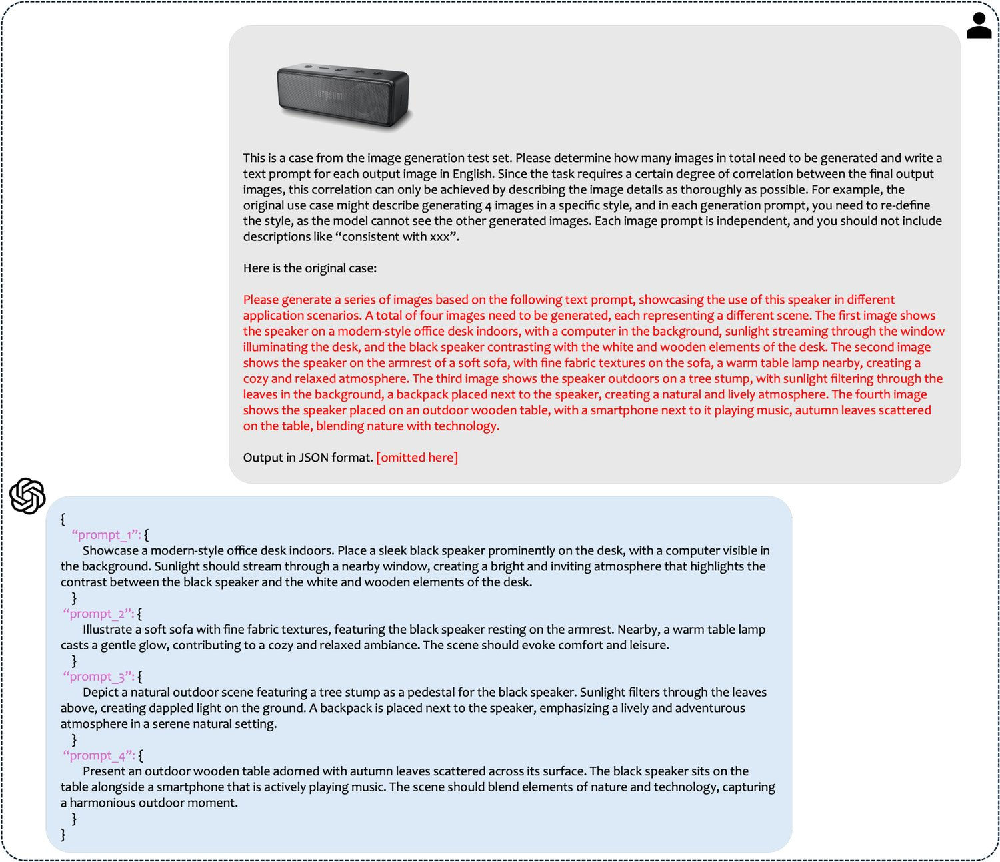
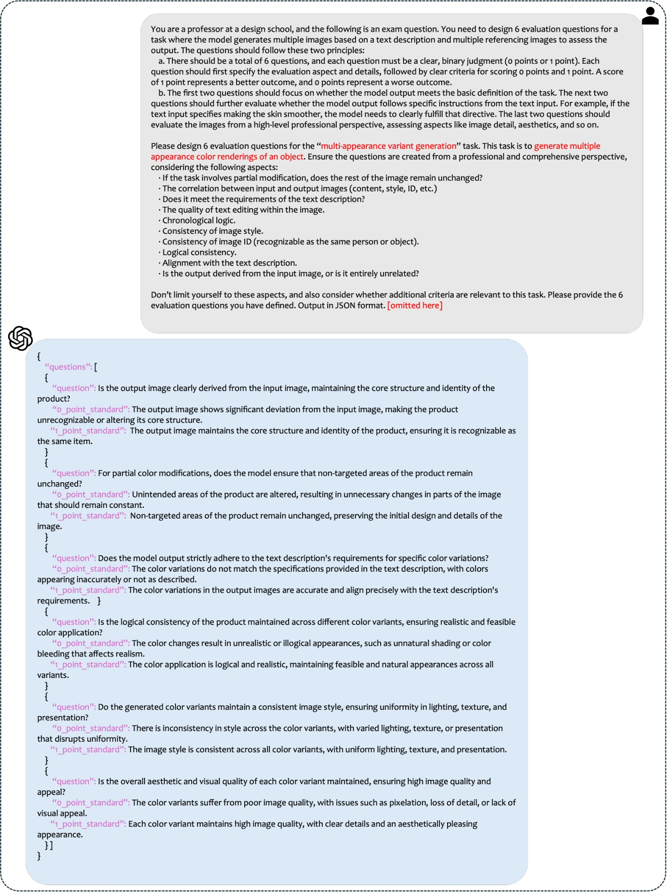
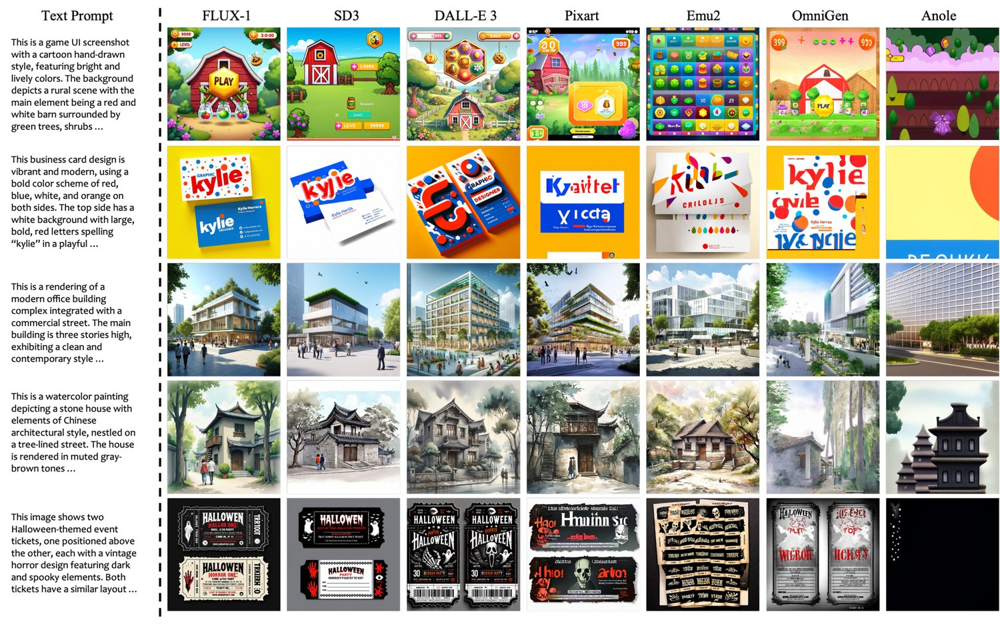
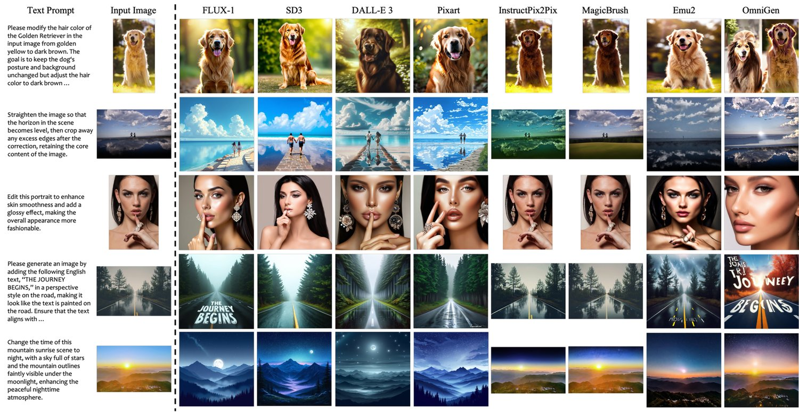
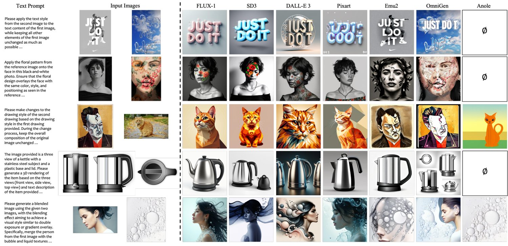
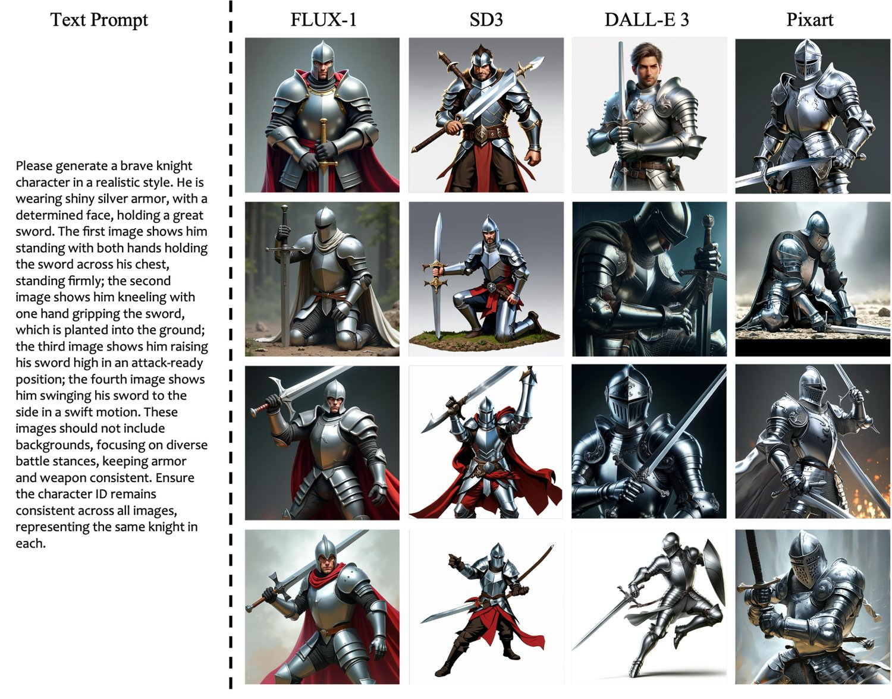
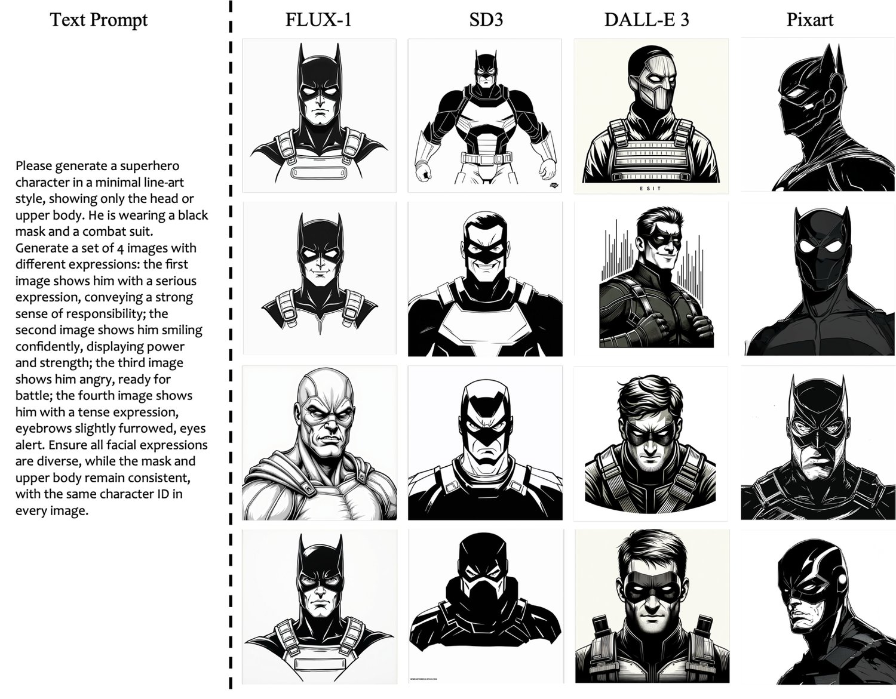
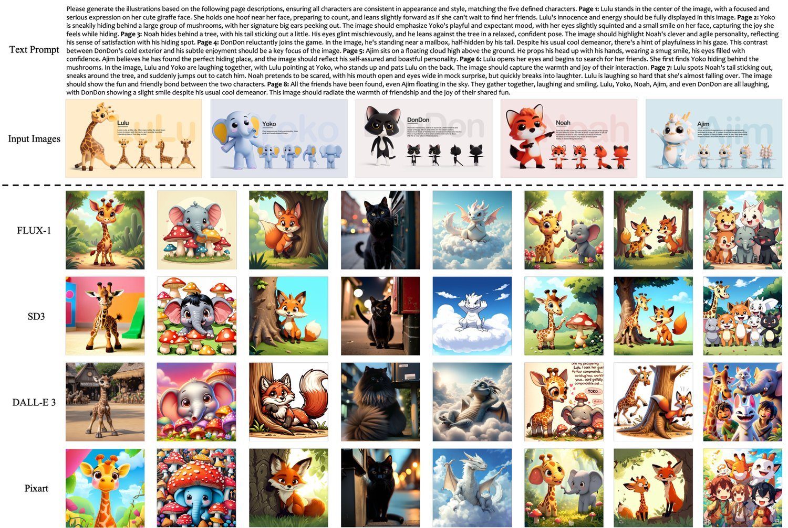
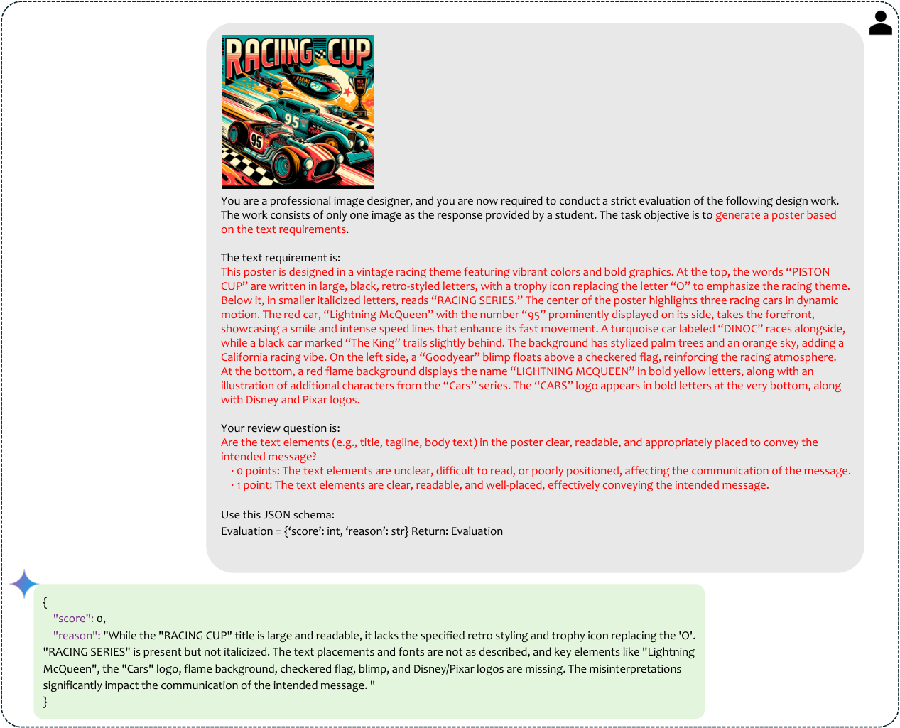
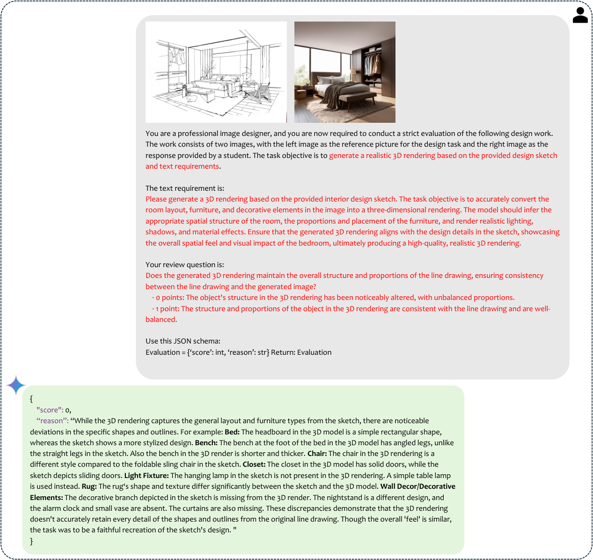